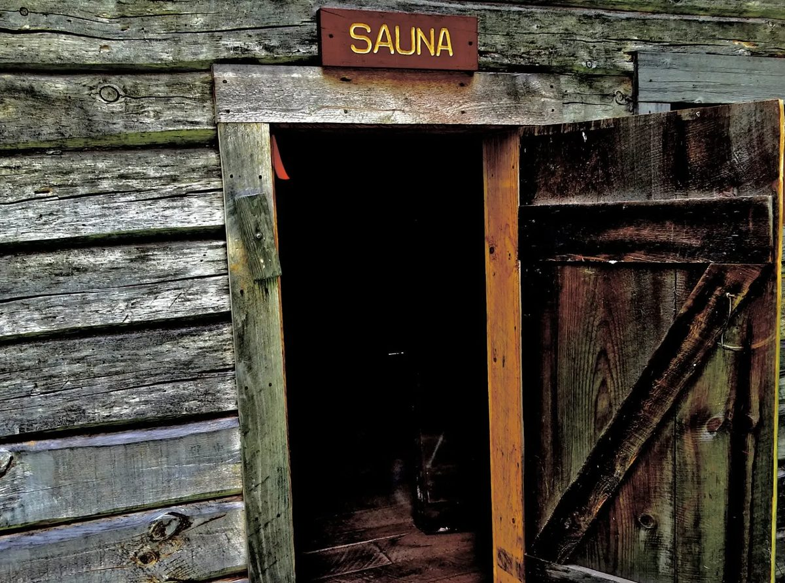

Our mission
To restore and preserve the pioneer farmstead;
to operate and maintain this farmstead as an educational tool to promote and carry on Finnish immigrant culture and history;
to provide hands-on educational experience in an outdoor setting as an open-air museum;
and to make use of existing historical resources.
Friends of the Wirtanen Pioneer Farm · since 2001
Step into Eli’s farmstead
Choose a building on the map to jump to it, or scroll the list and the map will follow along.
Every year at the farm

Who was Eli?
Eli was born Elias Vertanen in Karstula, Finland, in 1872. As the third son, he had no hope of owning the family farm.
As a teenager he emigrated to Thunder Bay, Ontario, to live with his brother David. When David died, Eli came to the United States to apply for citizenship, and in 1904 he homesteaded 40 acres along the Old Vermilion Trail in Markham, Minnesota.
He worked in logging camps and helped local farmers at harvest. There were no roads then, only trails, so Eli helped build and maintain the roads with horse-drawn power.
People from the forest
Finnish people are known as “people from the forest,” and Eli understood the forest and how to use it. He never married and never owned a car. Nearly everything he needed in life, from his food to the logs for his buildings, came from his own land.
“The forest gives what the forest has.”Finnish proverb
He set his buildings apart from one another, the way farms were laid out in the Savo region of Finland, just east of his birthplace. With space between them, a single fire could never take the whole farm. None of his buildings were ever painted, inside or out.
In his final years, when Eli could no longer keep up with the farm work, his neighbors Gladys and Alvin Pekkarinen looked after him and his farm. Eli died in 1957 and is buried in the Markham Cemetery in Colvin Township.
“This is a monument to a time when man and nature were in unity.”
Visitors’ favorite way to describe it: “a most peaceful and tranquil place.”
From the farm
Two summers to save Eli’s smoke sauna
A savusauna has no chimney: the fire heats a pile of stones and the smoke fills the room before the bathing starts. By 2008, the lower timbers of Eli’s were rotted from ground moisture and carpenter ants. At the Friends’ annual meeting that April, Norm Jarva and Harold Johnson volunteered to rebuild it, one timber at a time.



Volunteers step up. Norm and Harold take on the project at the annual meeting.
Seven pines. Norm donates red Norway pines from his Lakeland property. Volunteers fell and limb them, and John Latola’s sawmill near Aurora cuts the timbers.
A lesson in corners. Log builder Martin Mattson shows the crew how to mark and whittle Eli’s compound-mitered corners.
Up on jacks. The upper walls are raised so the rotten lower timbers can come out. Drain tile and gravel go in underneath.
Work stops for winter.
The last timber. It becomes the sill of the dressing-room window. Eli’s original soot-blackened benches go back inside.
The goal: ready for Fall Festival. A new 100-pound steel stove, welded by Harold in his garage, sits under the kiuas stones.
No two of Eli’s corners were the same. Every new timber was marked, chipped with a broad-axe, shaped with a draw knife and test-fitted, often two or three times, until it matched his.
- Oakum, gunny sacks and old “long-handles”stuffed in as chinking
- 1-inch wooden pegs, 12–14 inches longtwo in every timber
- Very large nailsspiking every dovetail
Harold Johnson · Norm Jarva · Jack Huhta · Bill Marolt · Gene Saumer · Jim Nesselroad · Kraig Johnson · Mike Tynjala · Keith Nelson · Aaron Nelson · John Latola · Martin Mattson · Bob Kochendorfer · Don Maki · Mickey Nissila · Bradach Lumber of Aurora
Read Norm and Harold’s full notesGetting there
Open year-round for self-guided visits.
The entrance is a grass lane off Markham Rd, marked by the carved Eli Wirtanen Pioneer Farm sign at the road’s edge. Park in the gravel lot beside the lane and walk in.